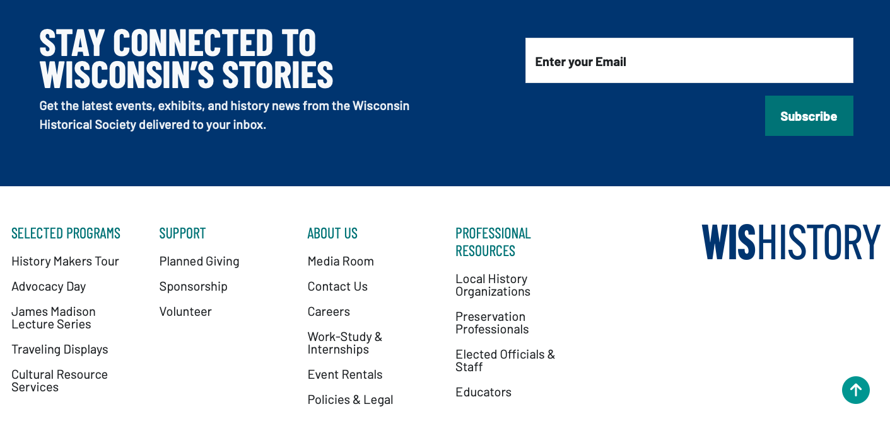
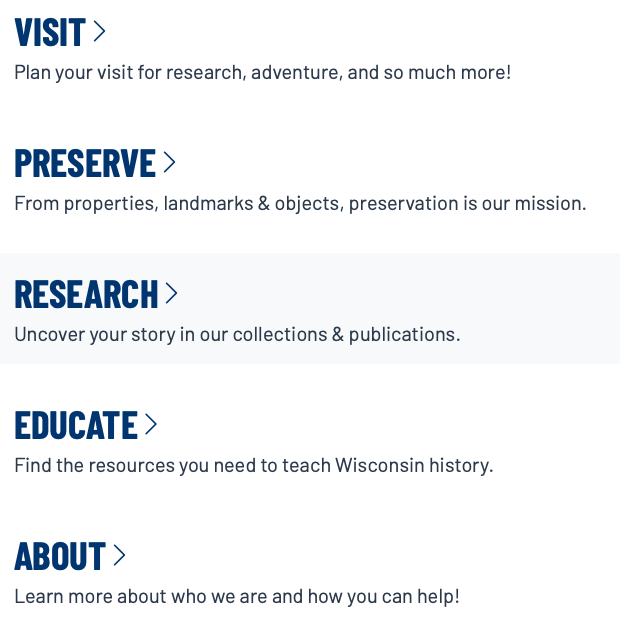

Student: Ryan Dombrock
Date: 1 May 2026
Information System: Website of the Wisconsin Historical Society (https://wisconsinhistory.org)
The Wisconsin Historical Society was established in 1846 and is the oldest continuously state funded historical society and has a stated mission to connect people to the past by collecting, preserving and sharing stories. In line with its vision of enriching and transforming lives through unparalleled access to history, the Wisconsin Historical Society launched a new brand of "WisHistory" along with a redesigned web experience on 14 April 2026. The intent was to invite new audiences to experience the life changing power of history and use the shorter moniker to enhance public engagement opportunities. In light of this recent launch of a new website, the following investigation is presented to assess the information system and provide critical analysis.
The new web experience for WisHistory follows a two-year process with deliberate input from users. Some of the stated goals were to enhance navigation and organization and improve accessibility features in order to provide a more user-friendly experience. The home page of the website is "wisconsinhistory.org" and holds links in the fixed header shown below of "Visit Us", "Upcoming Events", "Become a Member", and "Donate" along with the search magnifying glass and a menu drop down in the top right corner.
Scrolling down the homepage provides many links to various highlighted programs, events, and resources. The bottom of the homepage has an area for a user to enter their e-mail to join the Historical Society's mailing list as well as additional links to programs, support options, information, and professional resources as shown below.


The digital collections hosted on the WisHistory webpage include over 163,000 items which can be searched or browsed. Browsing is enhanced by 13 dropdown filter submenus on the left-hand side of the digital collections exploration page. There are also detailed descriptions of eight featured collections and 20 additional collections on the main digital collections page. Each of these descriptive boxes links to the respective collection. The Wisconsin Historical Society cares for more than a half million historic objects and highlights some of the featured objects with bespoke information pages and high-quality images. The Wisconsin Historical Society also connects to comprehensive databases of historic sites including the National & State Register of Historic Places (NR), the Architecture & History Inventory (AHI), and a dedicated site for Wisconsin's Great Lakes shipwrecks. The shipwreck database is hosted on its own web page but the NR and AHI are both digitized databases hosted on the WisHistory site with 2,808 and 158,686 digital records respectively.
For the evaluation of the current information site in the newly released WisHistory website an assessment using Nielsen's 10 Heuristics is applied in the table below.
| Heuristic | Evaluation |
|---|---|
| 1. Visibility of System Status | The status of new website updates and information link prominently displayed on home page. |
| 2. Match Between System and the Real World | Overall the system is well grounded in the real world. Plain language is used for digital collections as well as the mission areas of the historical society. Navigation is organized in a functional manner. |
| 3. User Control and Freedom | Users have a wide range of freedom to explore the website. They can often find the same resource in various ways. The back button is the quickest way to return to previously viewed pages but also, there is a navigation tree within each of the five main submenus that allows users to exit back to the submenu or explore other topics within the submenu easily. |
| 4. Consistency and Standards | Design is consistent across the website making it seamless to navigate the wide variety of information and resources available. Accessing the website from a smartphone shows that the new website provides a consistent experience for mobile browsing. |
| 5. Error Prevention | Errors were not encountered but the few external links were not clearly identified. |
| 6. Recognition Rather Than Recall | The design integrated functional-oriented navigation that was intuitive and allowed for natural exploration without mentally taxing the user. Actions and options were clearly presented. |
| 7. Flexibility and Efficiency of Use | The website displays a high degree of flexibility with multiple was to navigate to various resources and information. Content is not personalized or customized for individualized users but functional organization makes navigation efficient for novice visitors. |
| 8. Aesthetic and Minimalist Design | The design is definitely not minimalist although a relatively simple and consistent color scheme reduces distraction. Lots of compelling, high quality images are integrated to present an overall visual appealing product. There is a huge volume of information which can trend towards being overwhelming and perhaps distracting, however, this is likely a deliberate trade off to serve the organization’s mission of connecting people to their vast and diverse resources. |
| 9. Help Users Recognize, Diagnose, and Recover from Errors | Errors were not encountered on the website. All links functioned well and clear labeling and visual cues aided in optimized navigation. |
| 10. Help and Documentation | There is a dedicated link to Policy & Legal resources with robust documentation of various policies, terms and notices. Help documentation is not readily available and even contact options are not prominently displayed. |
Overall the WisHistory website performed well in the heuristic evaluation with a few weaknesses and recommendations noted in the table below.
| Critique | Recommendation |
|---|---|
| The only contact option is a form to submit a question or comment. No phone or e-mail contacts for assistance and no dedicated website help page are available. | A small help button could be added in the header banner which could link to website resources and FAQs. Additional contact information could be added beyond the feedback form. |
| The only navigational friction encountered occurs when the user has navigated from the home page to the menu page by clicking on the top right menu button and would like to return to the home page. The only way to do so is to click an "X" in the far top right-hand corner to close the menu which is inefficient if the user has navigated the cursor to the various submenu items on the left-hand side of the page. | Either a "Home" button should be added on the top left-hand side or the "WisHistory" text that exists in that space on all other pages and directs back to home should be maintained on the menu page as well. |
| FAQs on the new website deployment page indicate a "Send Feedback" button should be located in the lower right-hand corner of the screen, but it was not available. | This button should be added or restored, especially during this early roll out of the new website. Users of the old website with more experience with the organization's resources may have more feedback to provide and should have an easy way to do so. |
| The few links that navigated to other external websites were not clearly identified, however, they did open in new tabs automatically which made it obvious that you were leaving the WisHistory site and easy to return if desired. | A pop up notification could be added to alert the user that they are about to open a new tab. However, this necessity is likely mitigated by the fact that all external links were to partnered sites associated with the University of Wisconsin. |
| The "About Us" section lacks a concise summary of all of the various mission areas of the Wisconsin Historical Society. The "Our Story" page has a comprehensive and detailed timeline of significant events but also does not concisely tell the story. A new user just exploring WisHistory for the first time can only get a good representation of all the different efforts of the organization by exploratory navigation of the website. | Add a concise overview to the "About" page that summarizes the various mission areas of the historical society clearly. |
| The FAQs about the website updates notes that the website is compliant with ADA Section 508 accessibility requirements as well as that it follows WCAG accessibility standards but there is no visible link to accessibility tools or documentation on the site. | A link to accessibility tools and information should be provided either under the "Help" button previously recommended or in a link in the footer menu with other resources. |
Overall the updated website for the Wisconsin Historical Society can be assessed as a success. "WisHistory" clearly has very large volume of resources, information, and programs. The diversity of its missions from libraries and archives, to being the official historical place register, managing historical sites, publishing its own materials, and massive education and outreach programs would be overwhelming to even an experienced user but somehow the website's natural layout and simple exploratory navigation made it incredibly useable for a novice just beginning to investigate what resources and missions the society has. Though it was not part of the scope of this analysis, a basic review of the legacy website legacy website indicates that vast improvements have been made to the ease of navigation, modernization, and overall aesthetics. Overall, a heuristic review of the new website had largely positive results with a few minor critiques and recommendations noted. As the new website had only been live for approximately a week at the time of analysis, this is impressive and notable that no major bugs, errors, or dead links were encountered. Due to the recency of the rollout and the indication that ongoing feedback is being solicited, it is likely that some of the recommendations will be addressed naturally in the near future as users provide feedback.